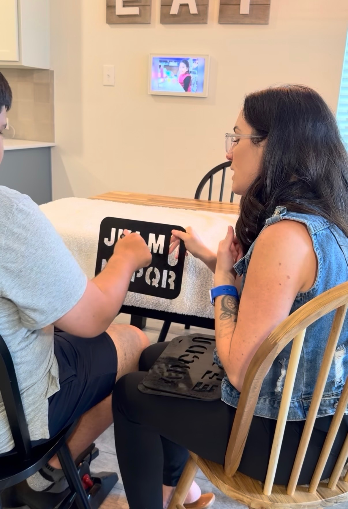
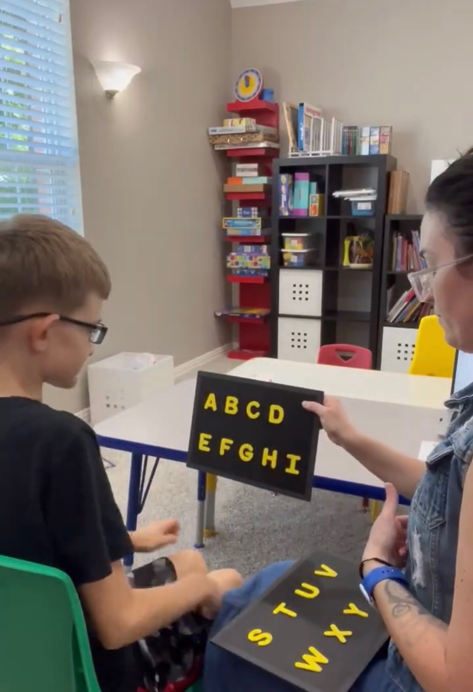
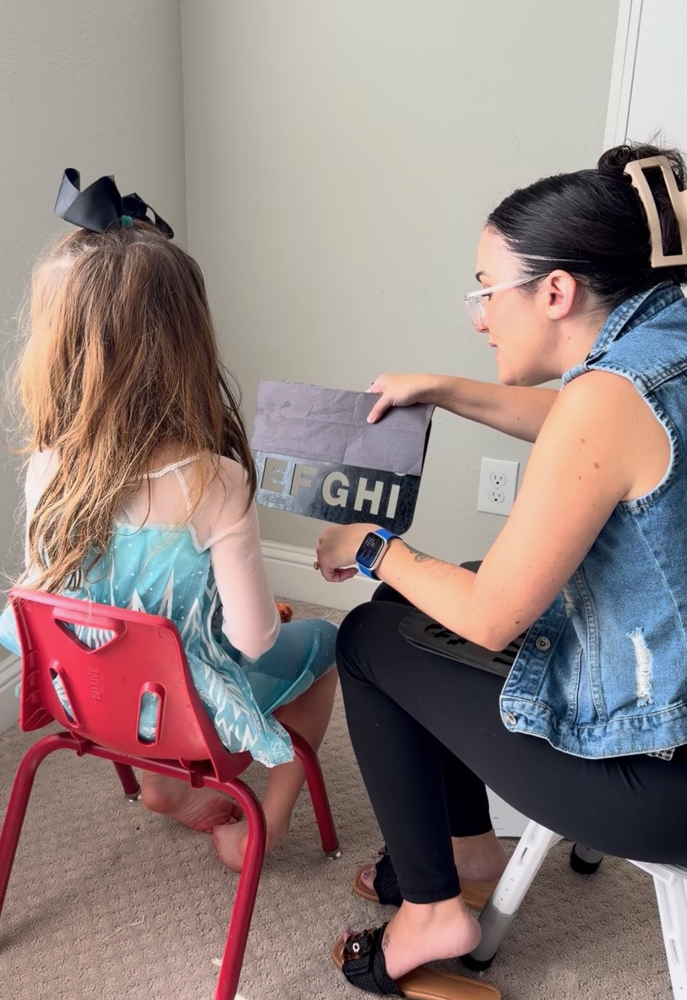

Unlocking every voice — one letter at a time.
This is a moment we have been working toward, praying over, and preparing for — and we are thrilled to announce that True Vine Mission Academy has officially submitted our application for 501(c)(3) nonprofit status.
This milestone is so much more than a legal filing. It is a declaration that this mission is real, that this school is coming, and that we are doing everything in our power to build something lasting for our students and their families. Official nonprofit status will open doors to grant funding, institutional partnerships, and a new level of credibility as we prepare to open our doors.
We are grateful for every person who has prayed with us, given to us, and believed in us to get to this moment. This one is for you — and for every student whose voice is waiting to be heard.
Our co-founder Sunny Talbert continues to press forward in her journey to become a certified Spellers Method Practitioner — and the work she is doing right now is already changing lives.
Sunny is actively meeting with a range of families to spell alongside students, providing feedback for her practitioner class while making a real difference in each session. Every meeting is both training and ministry — she is not just earning a certification, she is unlocking voices right now.



Sunny working with students during her practitioner training sessions.
We are thrilled to share that Sunny is on track to complete and graduate in October 2026 — just in time for the final stretch of preparation before our February 2027 opening. Please keep her in your prayers as she finishes strong.
Every step of this journey confirms what we already believed — that God is going before us, opening doors, and preparing the way for our students.
— The True Vine Mission TeamWe are overjoyed to welcome Esther Peterson to the True Vine Mission Academy team in her role as our True Vine Treasure. Esther brings a heart for this mission that is evident from the very first moment you meet her, and we are so grateful God brought her to us.
"I'm excited and thankful for the opportunity to serve with a nonprofit carrying out Proverbs 31:8–9 so beautifully — not just speaking out on behalf of the voiceless, but giving them a voice! I cannot wait to see how God blesses others through this wonderful organization."
— Esther Peterson, True Vine TreasureProverbs 31:8–9 calls us to speak up for those who cannot speak for themselves and to defend the rights of the poor and needy. That is the heartbeat of True Vine Mission Academy, and Esther embodies it beautifully. We are so glad she is part of this family.
We are so proud to share that our co-founder Gail Ulloa has successfully completed the Spellers Online Communication Partner (CP) Training — a meaningful milestone for True Vine Mission Academy and the families we will one day serve.
The Communication Partner (CP) Training Program empowers caregivers and educators to work with their child or student differently — teaching the expert knowledge behind Spellers Method so that every interaction is more effective, more confident, and more connected.
This training is also designed for school-based communication partners who support already-fluent typers and spellers in the classroom setting.
You don't have to be tired or discouraged. You can learn to spell with your child, feel successful, and be excited about the future — and that is exactly what this training equips you to do.
Having a CP-trained co-founder means our families will be supported from day one by someone who has done the work, walked the path, and is ready to walk it alongside them.
We are thrilled to share that our partnership with Cornerstone Ranch continues to be one of the greatest blessings of this season. Their flagship new campus is on track to complete construction and open in January 2027 — just one month before our own doors open — and the alignment of our timelines feels like nothing short of providence.
The advice, guidance, and support that Cynthia and her team at Cornerstone Ranch have poured into True Vine Mission Academy has been invaluable. They have walked this road before us, and their willingness to come alongside us, share their wisdom, and cheer us on is something we do not take for granted for a single moment.
We are in awe of this partnership and so blessed to be supported by Cynthia and the entire Cornerstone Ranch family. We look forward to the ways our two communities will grow together in the years ahead.
True Vine Mission Academy is a faith-based nonprofit school in Celina, Texas dedicated to serving nonspeaking and minimally speaking students through the Spellers Method — a communication approach rooted in presumed competence.
Opening February 2027. Enrollment inquiries welcome.
"Abide in me, and I in you." — John 15:5
If you feel led to support the mission of True Vine Mission Academy, every gift — large or small — goes directly toward opening our doors and unlocking the voices of our students.
Support Us on GiveButter Visit Our Site Follow on Facebook